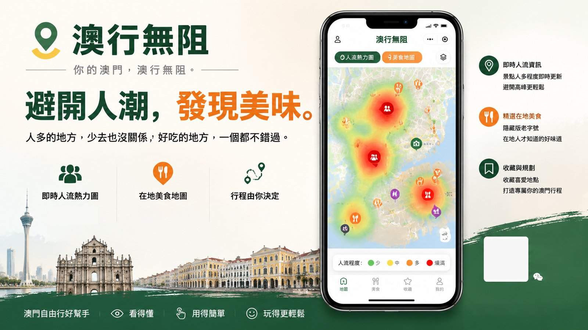

Who We Serve
服務群體
訪澳自由行旅客
出發前看懂擁擠度，避開人潮高峰，把時間留給真正值得的风景與味道。
澳門本地街坊
日常出行即時掌握景區人流，假日約飯、帶朋友逛小城都更有預算。
社區小微商戶
藏在街巷的老字號被看見，分流而來的遊客成為實際到店的新客源。
景區與城市管理者
以零私有數據成本獲得公眾級人流參考，呼應智慧城市與旅客分流政策。
The Project
參賽專案介紹
澳行無阻MACAU ROAM FREE
一款微信小程序 —— 左手看擁擠（實時熱力圖），右手看好吃（在地美食圖），把行程的決定權交還給遊客。
避開人潮，發現美味。
實時景點熱力圖
以綠、黃、紅三色帶即時呈現全澳重點景區擁擠程度，並結合時間衰減函數，預判未來 1–2 小時的人流趨勢，回答「何時去最好」。
在地美食地圖
老字號、茶餐廳、米芝蓮小吃精準標註於地圖，支援按距離、菜系（葡國菜／粵菜／甜品）、人均消費多維篩選，打破資訊壁壘。
雙圖層自由疊加
熱力 × 美食圖層一鍵切換或疊加；點擊圖標彈出詳情卡片，招牌菜、營業時間、評價一覽無遺，並可直接拉起微信內置導航。

使用流程 · 四步完成一次聰明出行
打開小程序
首屏即是帶實時熱力的澳門地圖，無需註冊登入。
查看熱力避峰
紅色景區先緩一緩，參考趨勢預測挑選最佳時段。
篩選心水美食
切換美食圖層，按菜系、距離、預算快速過濾。
一鍵導航出發
詳情卡片內直接拉起微信導航，視線不離地圖。
Core Algorithm
基礎人流信號加權求和，宏觀修正係數連乘；時段曲線依地點類型分群，天氣係數依室內外翻轉方向，停車場即時空位率是全模型唯一的即時訊號。對全澳重點區域做 Min-Max 正規化後映射至三色帶，輸出「相對擁擠排名」。
Pain Points
現實痛點分析
擠在熱點，錯過真味
大三巴、官也街等熱門景區空間緊湊，高峰時段人流極度擁擠，嚴重影響遊覽體驗；與此同時，極具在地特色的老字號美食隱藏於街巷之中，遊客常因資訊不對稱而錯過。
一座城的體驗失衡
路氹填海區單小時人流峰值（2026 年 6 月）。核心區過載拉低全澳旅客體驗，非核心區的社區老字號卻門可羅雀，部分甚至撐不下去而結業，冷熱兩極。
看得見的數據用不起
傳統電信基站熱力圖成本高昂，且屬隱私數據，難以用於面向公眾的輕量化小程序；主流地圖 App 亦缺乏「實時擁擠度 × 在地美食」的整合視圖。
數據來源：澳門旅遊局分區訪客統計（2026 年 6 月），團隊已採集覆蓋全澳 25 區、共 3,472 筆逐時記錄，作為 CrowdIndex 模型的基準熱度輸入。
Why Us
核心亮點與創新點
摒棄昂貴的運營商數據，以多源公開 API 融合自研 CrowdIndex 加權模型，開發成本低、落地速度快，MVP 即可真機演示。
引導遊客離開過度擁擠的核心景區、深入街巷探索，為非核心區小微餐飲帶來實際引流，切中澳門「智慧城市」與旅客分流的政策方向。
搜索、篩選、詳情、導航全部在地圖上完成，視線零跳轉；後端以 Redis 緩存預計算結果，熱力數據秒級加載。
The Team
團隊成員
兩人小隊，一前一後 —— 從數據管道到指尖界面，剛好覆蓋產品的完整鏈路。
- CrowdIndex 人流估算模型的設計與實作
- DSAT、SMG 等政府開放數據 API 對接
- Redis 緩存層與資料庫架構設計
- macau_events_scraper 活動數據管道維護
- 微信小程序開發與騰訊位置服務地圖整合
- Circle 疊加熱力效果與三色帶視覺實作
- 搜索、篩選與詳情抽屜的交互設計
- 產品視覺設計與 Demo 演示錄製
Our Goals
團隊參賽目標
短期 · 賽事期間
- 打磨第一款可用原型：交付可實機演示的 MVP —— 10–15 個景區熱力、30–50 筆美食 POI、雙圖層自由切換。
- 衝擊賽事獎項：以「公開數據 × 自研模型」的差異化路線，爭取創意與技術維度的認可。
- 驗證市場可行性：透過演示獲取評委與早期用戶的第一手回饋，校準產品方向。
長期 · 賽事之後
- 正式上線：接入全部真實政府數據源，讓「澳行無阻」真正服務每一位訪澳旅客。
- AI 旅遊助手（Phase 2）：引入大語言模型，實現自然語言查詢與 AI 行程動態重構的智慧避峰導覽。
- 沉澱團隊、探索商業化：建立協作默契，對接社區商戶合作，為後續創業打下基礎。